Dithioether Inhibitors of Bacterial RNA Polymerase–Sigma Factor Interactions Exhibit In Vivo Efficacy against MRSA
Jiqing Ye#, Cheuk Hei Kan#, Jiang Liu#, Tsz Fung Tsang, Man Wai Tsang, Xiaochun Su, Hantian Fang, Jiayi Qu, Yuan Tao, Yuanhao Hu, Long Yin Lam, Xiao Yang*, Cong Ma*
J. Med. Chem. 2025, 25352-25374.
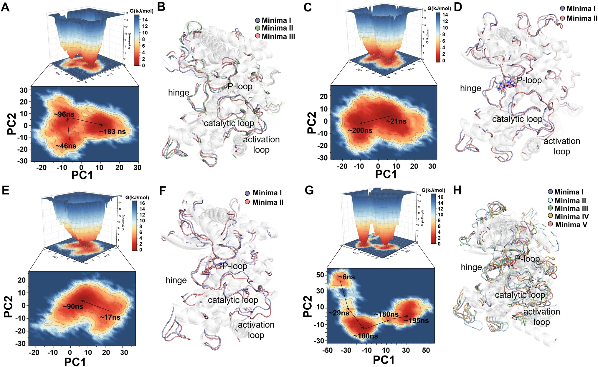
Understanding the structural stability and plasticity of VPS34 protein ...
Liang Yu, Chu Chen, Qianqian Dong, Fangxin Luo, Jiabing Li*, Jiqing Ye*
Mol. Divers. 2025, 1-15.
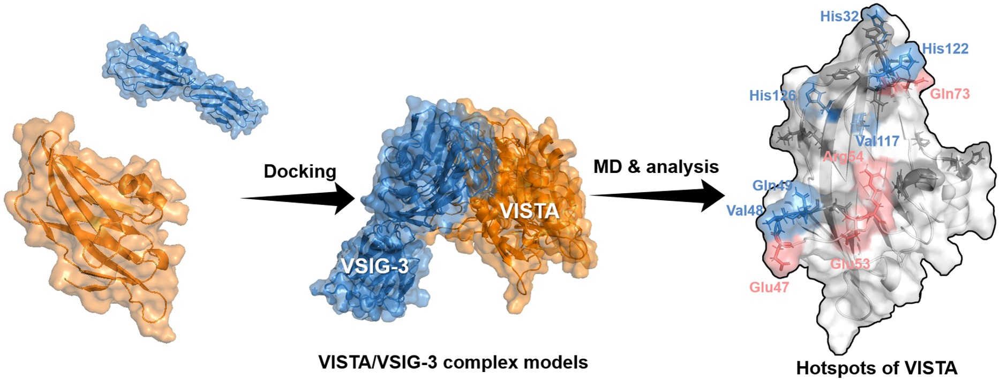
Mapping the Binding Hotspots and Transient Binding Pockets on V-Domain Immunoglobulin Suppressor of T Cell Activation Protein Surface
Bingjie Li, Lixiu Xu, Chu Chen, Jiqing Ye*
ACS Omega 2024, 9, 48657-48669.
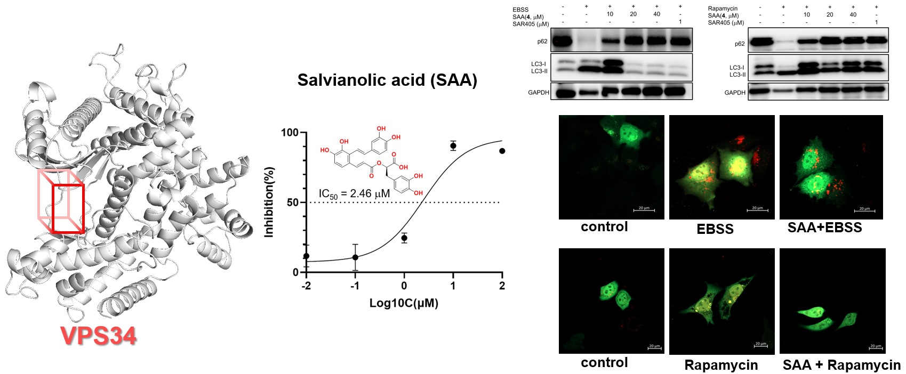
Virtual Screening and Biological Evaluation of Natural Products as Novel VPS34 Inhibitors that Modulate Autophagy
Xiaowen Feng, Baoming Wu, Hanyang Xu, Chu Chen, Jiqing Ye*
ChemMedChem 2024, e202400580.
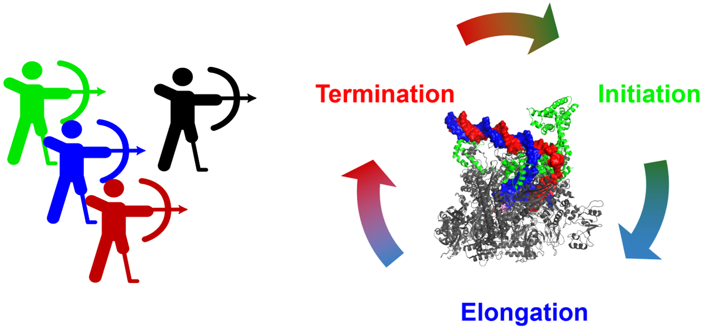
Inhibition of bacterial RNA polymerase function and protein–protein interactions: a promising approach ...
Jiqing Ye†, Cheuk Hei Kan†, Xiao Yang*, Cong Ma*
RSC Med. Chem. 2024, 15, 1471-1487.
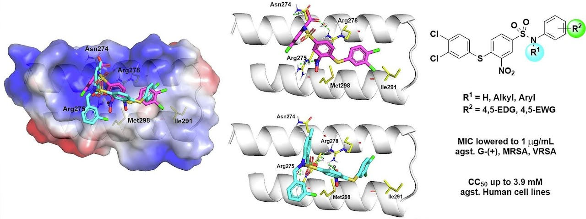
Sulfonamidyl derivatives of sigmacidin: Protein-protein interaction inhibitors targeting bacterial RNA polymerase ...
Jiqing Ye†, Cheuk Hei Kan†, Yingbo Zheng, Tsz Fung Tsang, Adrian Jun Chu, King Hong Chan, Xiao Yang*, Cong Ma*
Bioorg. Chem. 2024, 143, 106983.
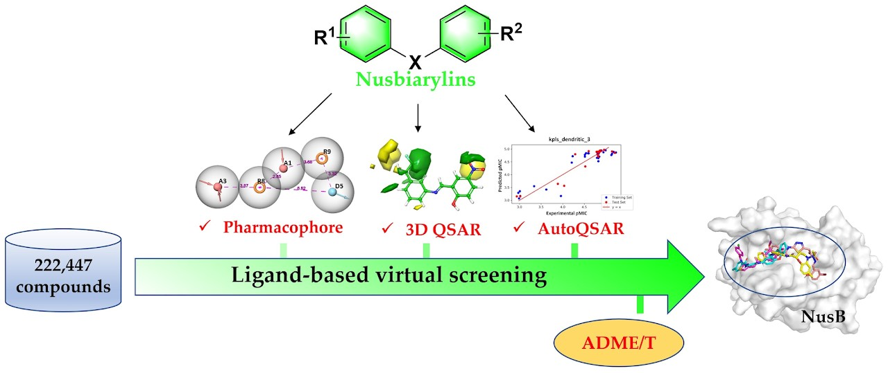
Ligand-Based Drug Design of Novel Antimicrobials against Staphylococcus aureus by Targeting Bacterial Transcription
Jiqing Ye†, Xiao Yang*, Cong Ma*
Int. J. Mol. Sci. 2023, 24, 339.
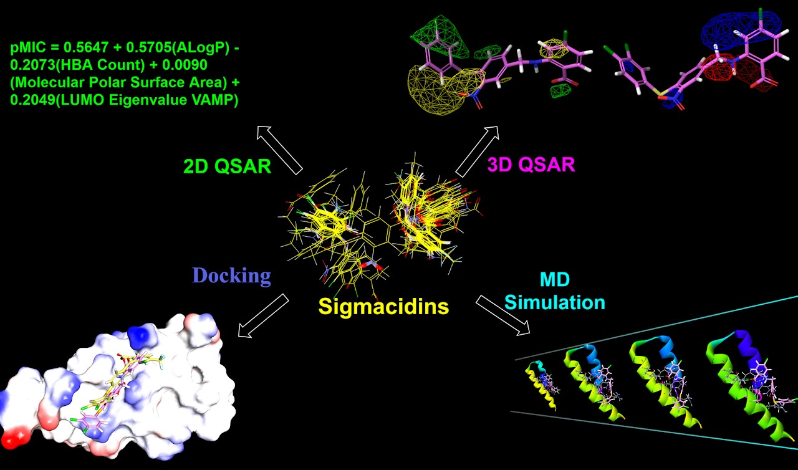
QSAR, Docking, and Molecular Dynamics Simulation Studies of Sigmacidins as Antimicrobials against Streptococci
Jiqing Ye†, Xiao Yang*, Cong Ma*
Int. J. Mol. Sci. 2022, 23, 4085.
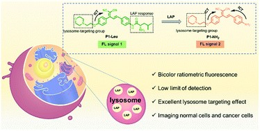
A ratiometric fluorescence probe for selective and sensitive detection of leucine aminopeptidase in lysosome
Di Yuan,‡ Ziwei Xu,‡ Bingling Zhang, Xiong Yin, Jiqing Ye, Xiaole Zhou*, Leyu Wang*
Chem. Commun. 2022, 58, 8364-8367.
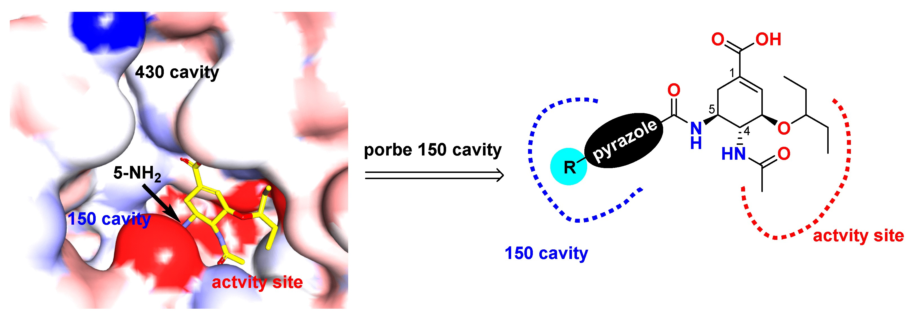
Design, Synthesis, Biological Evaluation and In Silico Studies of Pyrazole-Based NH2-Acyl Oseltamivir Analogues ...
Jiqing Ye†, Lin Lin, Jinyi Xu, Paul Kay-sheung Chan, Xiao Yang*, Cong Ma*
Pharmaceuticals 2021, 14, 371.
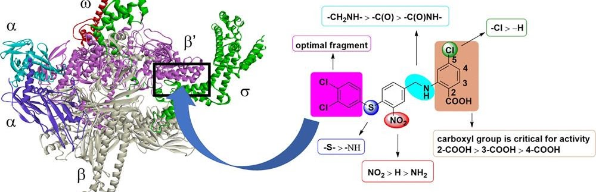
Discovery of Antibacterials That Inhibit Bacterial RNA Polymerase Interactions with Sigma Factors
Jiqing Ye, Adrian Jun Chu, Rachel Harper, Shu Ting Chan, Tsun Lam Shek, Yufeng Zhang, Margaret Ip, Mariya Sambir, Irina Artsimovitch, Zhong Zuo*, Xiao Yang*, Cong Ma*
J. Med. Chem. 2020, 63, 7695-7720.
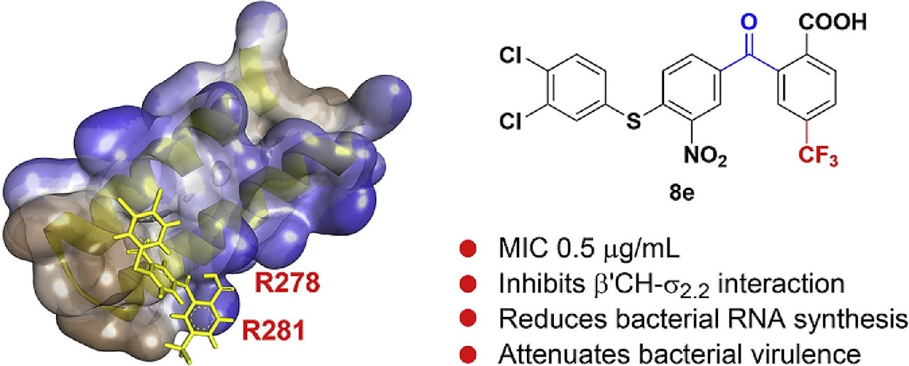
Benzyl and benzoyl benzoic acid inhibitors of bacterial RNA polymerase-sigma factor interaction
Jiqing Ye†, Adrian Jun Chu†, Lin Lin, Shu Ting Chan, Rachel Harper, Min Xiao, Irina Artsimovitch, Zhong Zuo, Cong Ma*, Xiao Yang*
Eur. J. Med. Chem. 2020, 208, 112671.
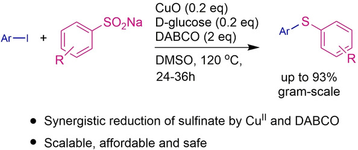
DABCO-promoted Diaryl Thioether Formation by Metal-catalyzed Coupling of Sodium Sulfinates and Aryl Iodides
Yanpeng Liu, Long Yin Lam, Jiqing Ye, Nicolas Blanchard, Cong Ma*
Adv. Synth. Catal. 2020, 362, 2326-2331.
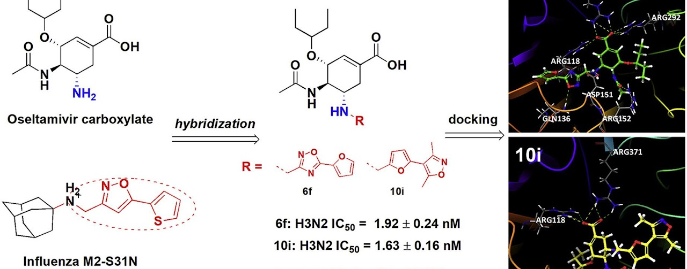
Novel N-Substituted oseltamivir derivatives as potent influenza neuraminidase inhibitors ...
Jiqing Ye, Xiao Yang, Min Xu, Paul Kay-sheung Chan, Cong Ma*
Eur. J. Med. Chem. 2019, 182, 111635.
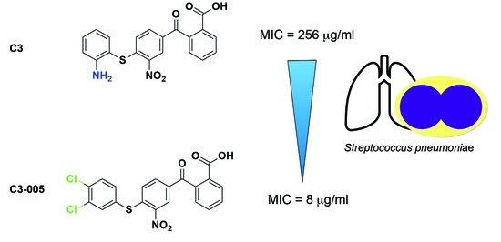
First-In-Class Inhibitors Targeting the Interaction between Bacterial RNA Polymerase and Sigma Initiation Factor ...
Jiqing Ye, Adrian Jun Chu, Lin Lin, Xiao Yang*, Cong Ma*
Molecules 2019, 24, 2902.
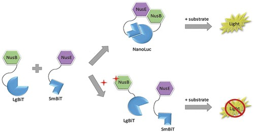
Simple Method for Studying in Vitro Protein–Protein Interactions Based on Protein Complementation ...
Tsz Fung Tsang, Yangyi Qiu, Lin Lin, Jiqing Ye, Cong Ma*, Xiao Yang*
ACS Infect. Dis. 2019, 5, 521–527.
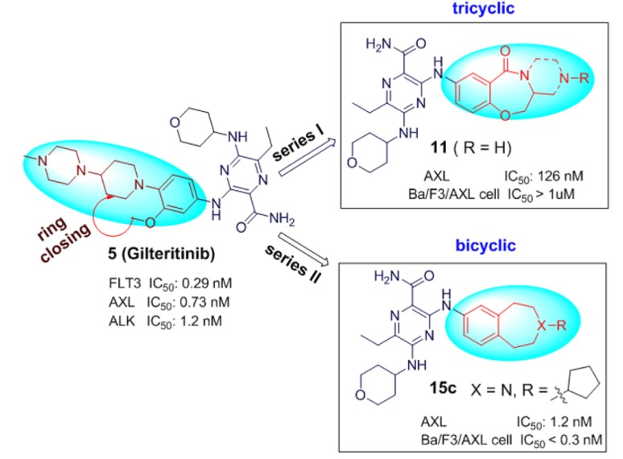
Discovery of a potent tyrosine kinase AXL inhibitor bearing the 3-((2,3,4,5-tetrahydro-1H-benzo[d]azepin-7-yl)amino)pyrazine core
Yueliang Wang, Li Xing, Yinchun Ji, Jiqing Ye, Yang Dai, Wangting Gu, Jing Ai*, Zilan Song*
Bioorg. Med. Chem. Lett. 2019, 29, 836-838.